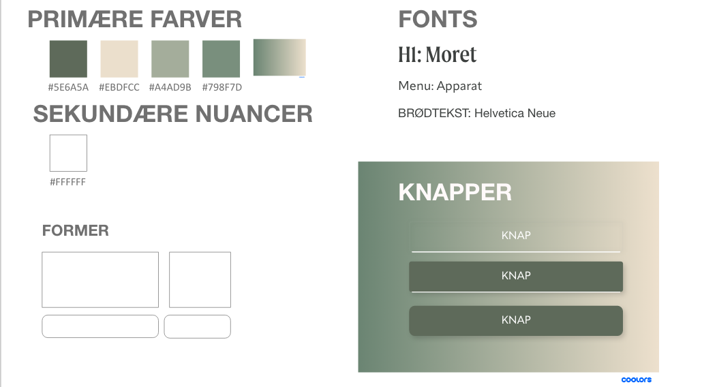
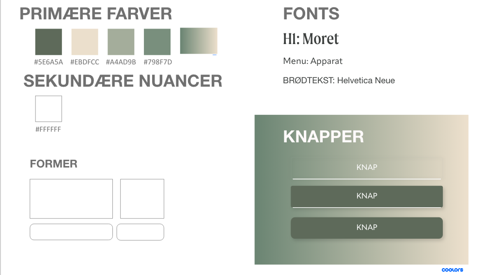
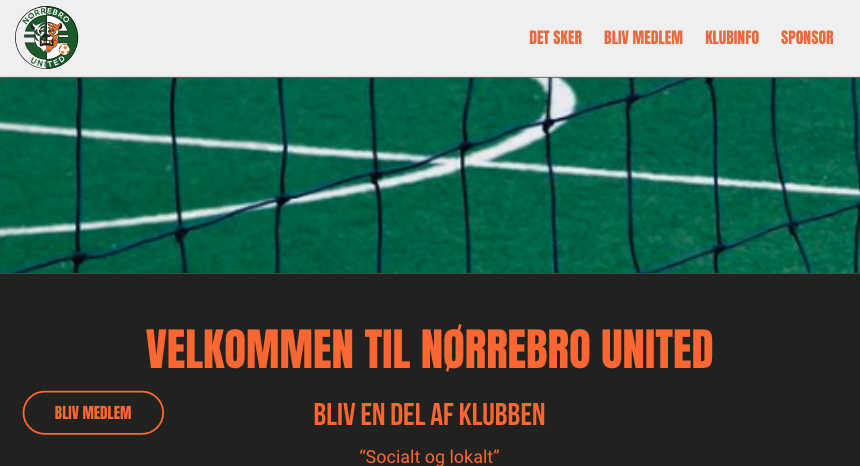
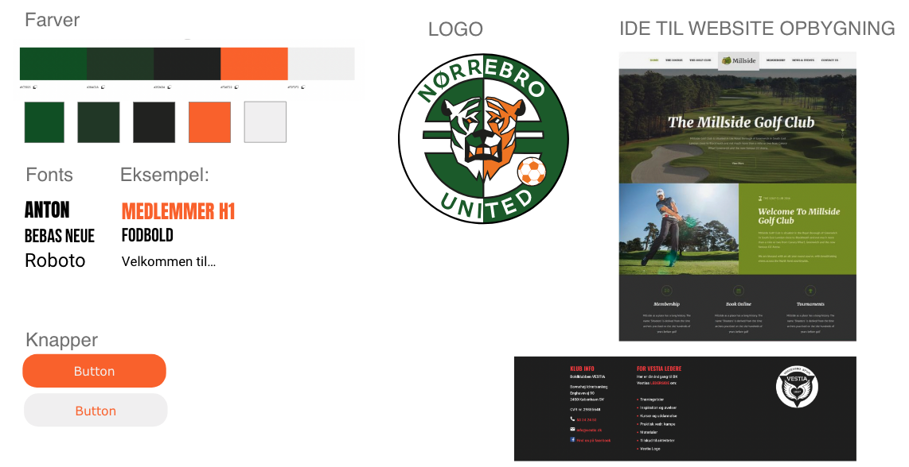
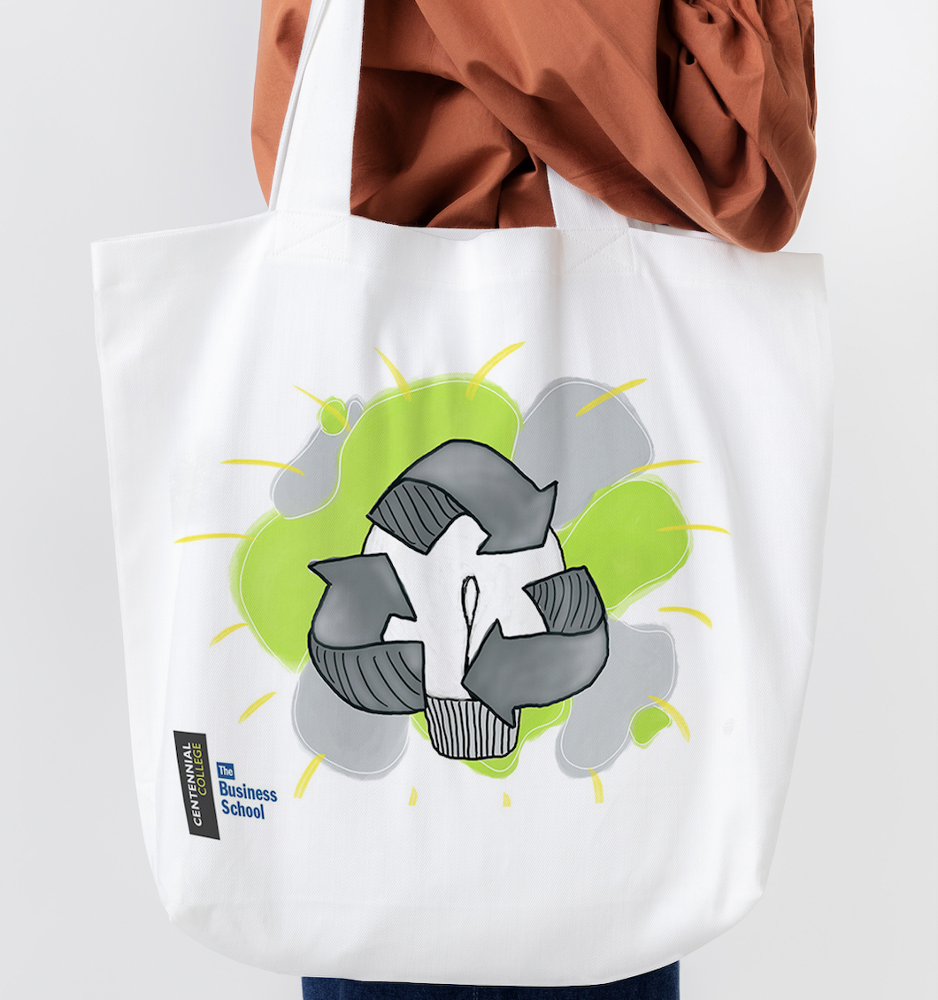
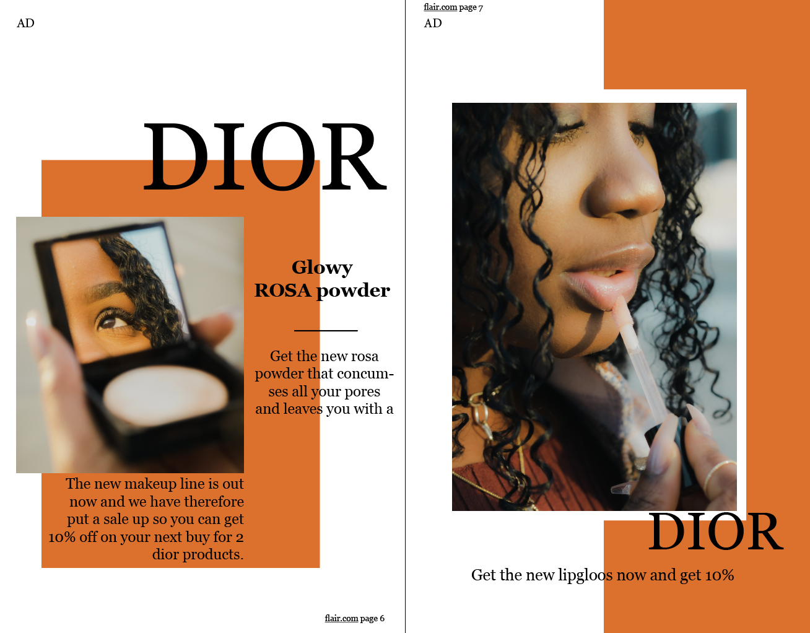
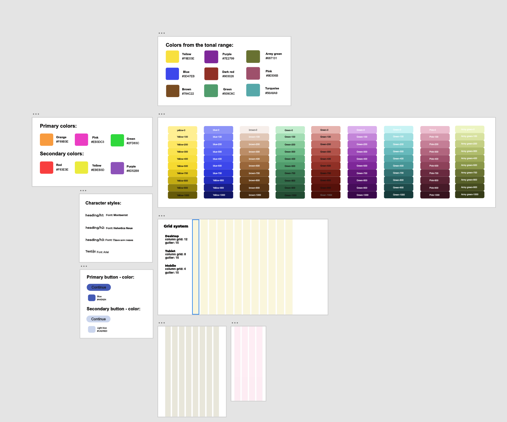
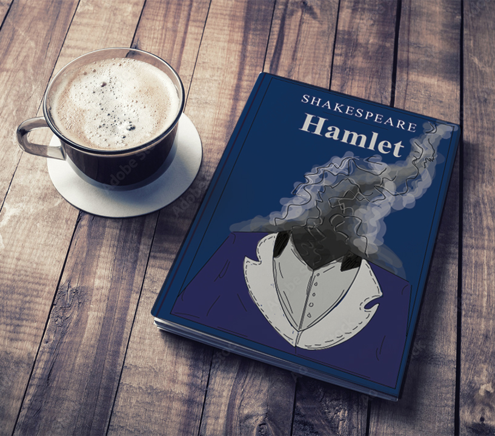
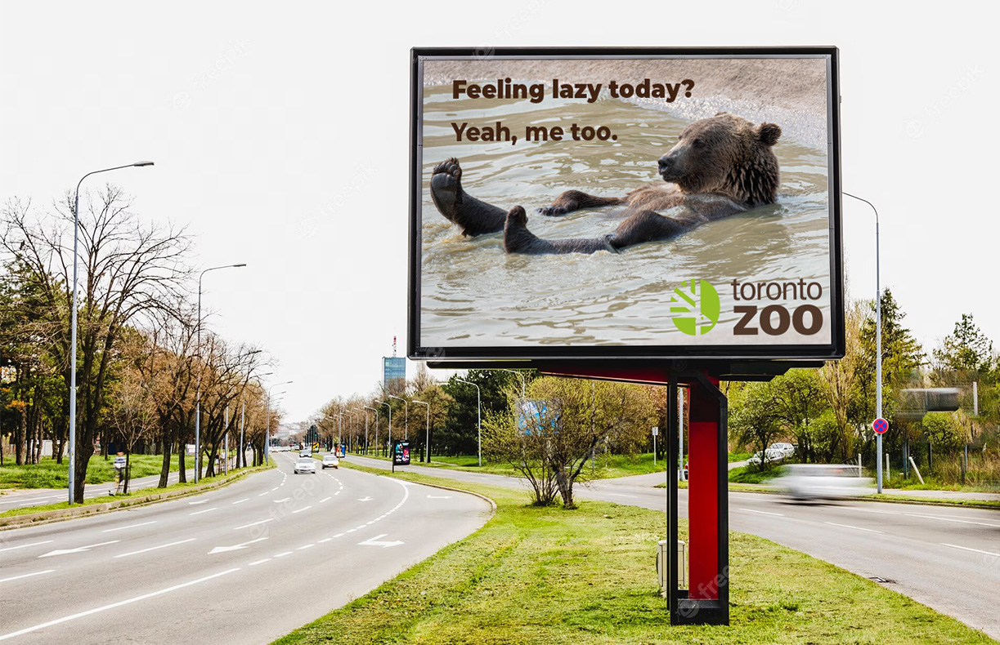
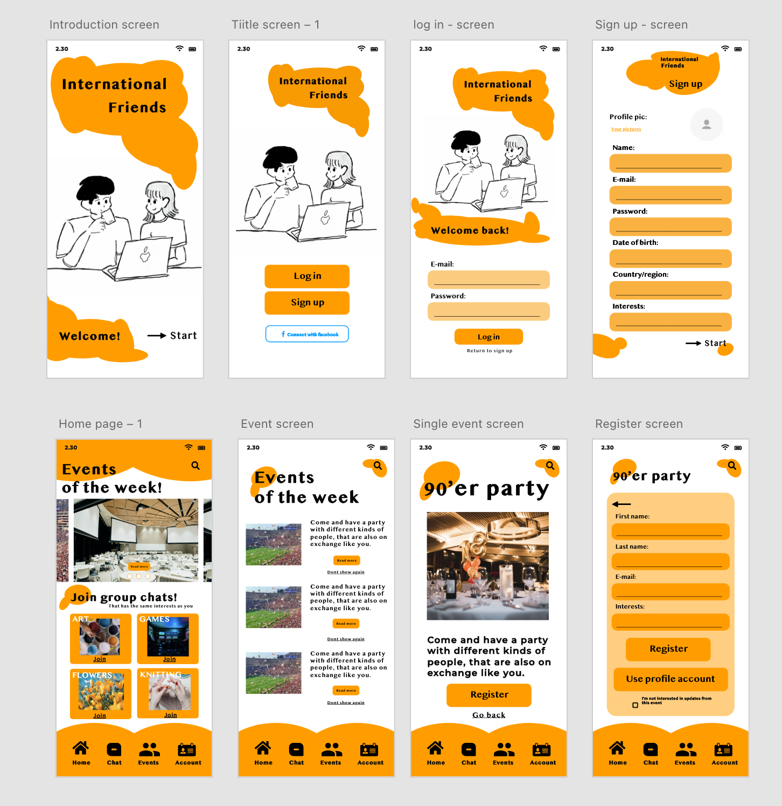

PORTFOLIO
2 SEMESTER - REDESIGN
Efter at have afsluttet min uddannelse i multimediedesign, samarbejdede jeg aktivt med en række forskellige kunder gennem mit andet semester. Vores fokus var på at udvikle hjemmesider, der både er brugervenlige og lette at navigere rundt på, med det formål at forbedre deres online tilstedeværelse. Vores mål var at levere skræddersyede løsninger, der overgik hver enkelt kundes specifikke behov, hvilket sikrede en enestående brugeroplevelse.
PROJEKT 1
 

KLIENT:
KARINA KEJSER BØHL
Til dette projekt arbejdede vi sammen med kunstneren Karina, som har specialiseret sig i at sælge malerier og bronzefigurer. Hendes mål var at skabe en hjemmeside, der er nem at bruge og reelt repræsenterer hendes kunstneriske værdier.
NUVÆRENDE HJEMMESIDEREDESIGN
PROJEKT 2
 KLIENT:
NØRREBRO UNITED
I vores andet projekt gik vi sammen med en fodboldklub, der ønskede en ny og brugervenlig hjemmeside. Da der var meget klubrelateret information, var det vigtigt at organisere det strategisk. For at gøre det nemmere at finde information har vi tilføjet en filtreringseffekt til en bestemt side.
NUVÆRENDE HJEMMESIDEREDESIGN
3 SEMESTER - UDLANDSOPHOLD I CANADA
På mit tredje semester valgte jeg bevidst at deltage i et udvekslingsprogram i Canada for at berige både min akademiske viden og kulturforståelse. I denne periode tilmeldte jeg mig seks kurser, der hver især bidrog væsentligt til at udvide min forståelse indenfor designfeltet. Nedenfor fremhæver jeg bemærkelsesværdige resultater fra specifikke projekter inden for hvert kursus.
Print produktion
MILJØVENLIGT LOGO DESIGN
Inden for printproduktion påtog jeg mig jobbet med at skabe et forretningsfokuseret og miljøvenligt logo til en mulepose. Efter specifikke farveretningslinjer kom jeg frem til dette resultat og lavede designet ved hjælp af Adobe Photoshop.
Redaktionelt design
AD FOR A MAGAZINE
På kurset Redaktionelt design omfattede det afsluttende projekt at lave et 16 siders magasin. Jeg designede en to-siders annonce med fokus på mode, med sigte på et stilfuldt og rent look. Hele magasinet blev omhyggeligt sammensat ved hjælp af Adobe InDesign.
Web Design 2
DESIGNSYSTEM I FILFORMAT
En af de opgaver, vi havde til dette kursus, var at lave en designsystemfil i Adobe XD. På denne måde kan du sikre dig selv altid at bruge UI og UX design konsekvent for dig eller for nuværende teammedlemmer. Denne opgave er lavet i adobe XD.
Illustrator værksted
BOGOMSLAG
Til dette kursus skulle vi lave en masse illustrationer i adobe illustrater. Til en af de sidste opgaver skulle vi lave et bogomslag til en bog efter eget valg. Jeg valgte at arbejde med Shakespear - Hamlet, da jeg følte, at jeg kunne udtrykke bogens emne mere klart. Dette er lavet i adobe illustrator.
Intro/ Reklamer & ophavsrettigheder
REKLAME FOR TORONTO ZOO
Dette kursus handlede udelukkende om ophavsrettigheder & reklamer. Billedet jeg har valgt at vise her, er fra en af de sidste opgaver, hvor vi skulle lave en annonce for Toronto Zoo. Jeg valgte at lave den med en lille smule humor, så annoncen ville føles mere behagelig. Opgaven er lavet i prohotoshop.
Interaktivt design/Mobile Platform
MOCKUP - APP
Målet for dette kursus var at skabe og designe din egen app efter eget valg. Det jeg har valgt at vise her, er mockupen af nogle af skærmene, fra opgavens udgangspunkt
4 SEMESTER - PRAKTIK I SPAINEN
Drevet af en passion for vækst og meningsfulde oplevelser valgte jeg målrettet Barcelona, Spanien, til mit to-måneders praktikophold på fjerde semester. Med udgangspunkt i de virkningsfulde oplevelser fra mit tredje semester i Canada, hvor jeg udforskede internationale muligheder, er mit valg om at foretage denne rejse i Spanien både en dedikation til at komme videre i min karriere og en dyb overbevisning om sådanne oplevelsers værdifulde og exceptionelle karakter.
ANBEFALING
CERTIFIKAT

BARCELONA
I mit praktikophold i Barcelona sørgede jeg for at nævne anbefalingsbrevet og færdiggørelsesbeviset i min erhvervserfaring. At arbejde internationalt hjalp mig med at blive bedre til at tilpasse mig og kommunikere på tværs af kulturer, og det gjorde mig bedre til at løse problemer og holde mig stærk, når tingene blev svære. At håndtere forskellige udfordringer lærte mig værdifulde lektioner for min fremtid